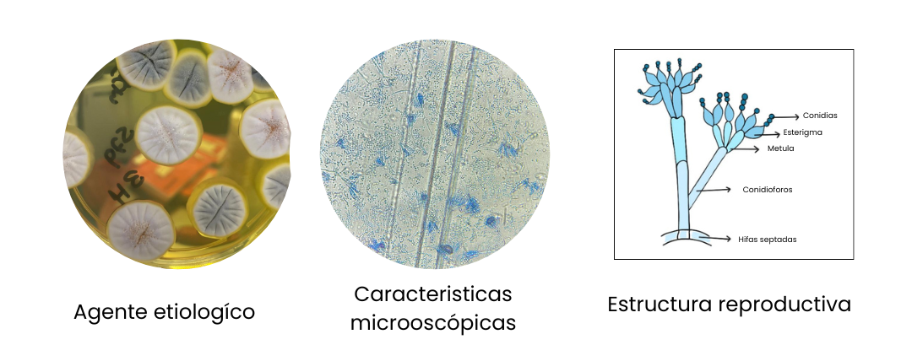
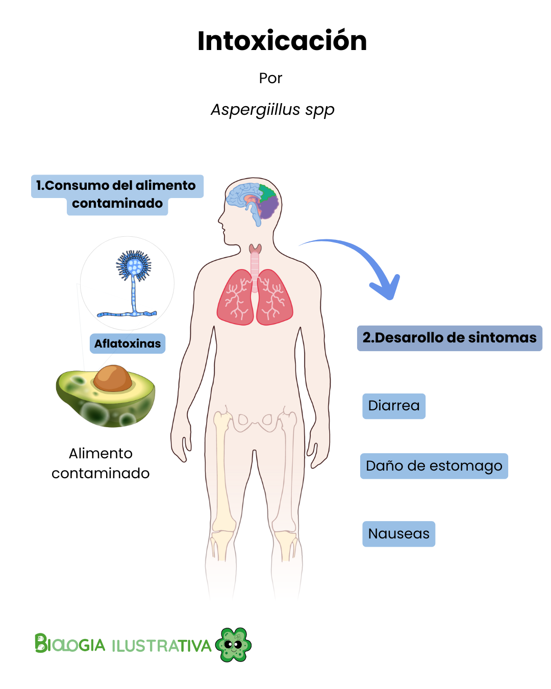

Los hongos filamentosos: habitantes silenciosos de nuestros alimentos
Publicado el 4 de febrero de 2026
En nuestra vida cotidiana es común observar que, al dejar por varios días alimentos como pan, arroz, arepas o vegetales, aparece lo que llamamos “moho”. Aunque suele verse como algo superficial, este fenómeno está relacionado con organismos con gran impacto en distintos ámbitos de la sociedad: los hongos filamentosos.
Introducción
Estos hongos influyen no solo en la conservación de los alimentos, sino también en la economía, el ambiente y la salud humana. A partir de esta experiencia cotidiana, exploraremos qué son, cómo crecen y por qué es importante comprenderlos.
¿Qué son los hongos filamentosos?
Lo que comúnmente llamamos “moho” corresponde a un grupo de organismos conocidos como hongos filamentosos. Se caracterizan por estar formados por estructuras microscópicas llamadas hifas, que al unirse forman una red conocida como micelio.
El micelio se extiende dentro del alimento o del sustrato, funcionando como un sistema de absorción de nutrientes, similar a una red de raíces.
Por esta razón, cuando se observa un alimento contaminado y se elimina solo la parte visible, el hongo no desaparece completamente, ya que:
- gran parte de su estructura permanece en el interior,
- pueden quedar esporas (su forma de dispersión),
- y pueden estar presentes sustancias tóxicas.


¿Cómo crecen los hongos?
Al igual que otros microorganismos, los hongos presentan distintas etapas de crecimiento que dependen de factores como temperatura, pH, cantidad de nutrientes y tipo de alimento o sustrato.
De forma general, este crecimiento se describe en cuatro fases:
- Latencia
- Crecimiento rápido (exponencial)
- Fase estacionaria
- Muerte celular

Sustancias que producen los hongos
Durante su crecimiento, los hongos producen diferentes compuestos llamados metabolitos. Algunos de ellos son útiles para la industria, como alcoholes empleados en fermentación, ácidos orgánicos usados en alimentos y cosméticos, y otros compuestos aprovechados en procesos biotecnológicos.
Un ejemplo importante es el ácido cítrico, producido por Aspergillus niger, ampliamente utilizado en la industria alimentaria y farmacéutica.
Sin embargo, los hongos también pueden producir sustancias que cumplen funciones de defensa o competencia con otros microorganismos, entre ellas los antibióticos y las micotoxinas.
Micotoxinas: un riesgo invisible
Las micotoxinas son compuestos tóxicos producidos por algunos hongos filamentosos. Pueden encontrarse en alimentos como cereales, frutos secos, frutas deshidratadas y especias.
Su crecimiento puede ocurrir antes de la cosecha, durante el almacenamiento o directamente en el alimento, especialmente en ambientes cálidos y húmedos.
Un aspecto preocupante es que muchas micotoxinas no se eliminan fácilmente con el calor ni con el procesamiento, lo que representa un riesgo para la salud humana.

Hongos y resistencia a los antifúngicos
En la actualidad, al igual que ocurre con las bacterias, el uso excesivo de antifúngicos ha favorecido la aparición de hongos resistentes.
Según la Fundación de Acción Global para las Infecciones Fúngicas (GAFFI), un número reducido de especies causa la mayoría de las infecciones fúngicas humanas, y estas infecciones representan un importante problema de salud pública.
Los hongos pueden desarrollar resistencia mediante distintos mecanismos, como cambios en sus estructuras celulares, expulsión de los fármacos, o formación de comunidades que los protegen. Esto dificulta su tratamiento y refuerza la necesidad de un uso responsable de los antifúngicos.
Reflexión final
Los hongos filamentosos no son solo el moho visible en los alimentos. Son organismos con una biología compleja, capaces de colonizar ambientes, producir sustancias útiles para la industria, generar toxinas que afectan la salud y adaptarse a los tratamientos antifúngicos.
Comprender su funcionamiento nos permite:
- mejorar la conservación de los alimentos,
- reducir riesgos para la salud,
- y valorar su impacto ambiental y social.
Próximo contenido
En un próximo artículo se abordará con mayor detalle:
- Los mecanismos de resistencia antifúngica
- Ilustraciones explicativas de estos procesos